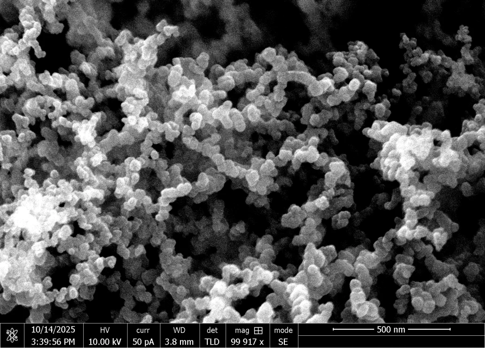

I study EE & CS at Stanford with a focus on AI and robotics. I'm broadly interested in the frontier of physical AI, and more particularly how we can develop systems that enable robots to seamlessly perceive and act on the world around them.
In an earlier life, I won the VEX World Championship, was named a Regeneron Science Talent Search Scholar, and placed top 150 in the U.S. National Chemistry Olympiad.
